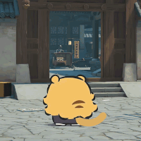

제주도에 나타난 거대 귤냥이
댓글
아 존나 색감이쁘고 귀엽다
기차도 보여줘요
큰데도 흉측하기보다 귀엽다 주변에 잔디만 자라면 이상할거 없겠다
잘뽑았다 귤이랑 냥이 귤냥이

귀엽게 잘만들었네ㅋㅋㅋㅋ
잘뽑았네 ㅋㅋㅋㅋㅋ
조형물 만들려면 저렇게 해야지
맨날 돈때려넣고 흉물만 만드는 지자체가 천지임
러버덕 작가 ㄷㄷ 엄청난 사람이 만들었네
저기 원래 무슨 포크레인 잔뜩 갖다놓도 애들 놀 수 있게 했던 자리 같은데 ㅋㅋㅋ
귤냥이 디자인 기똥차다
거대하긴 하네 ㅋㅋ
꼬리 귤껍질 저렇게해놓은거 개귀엽네
히야
제주케릭터해도되겠다
마지막에 에펠탑 밑에 나루토냥이도 매달려있넼ㅋㅋㅋㅋ
귀엽다
저 귤냥이가 움직이면 공포영화가 되겠군...